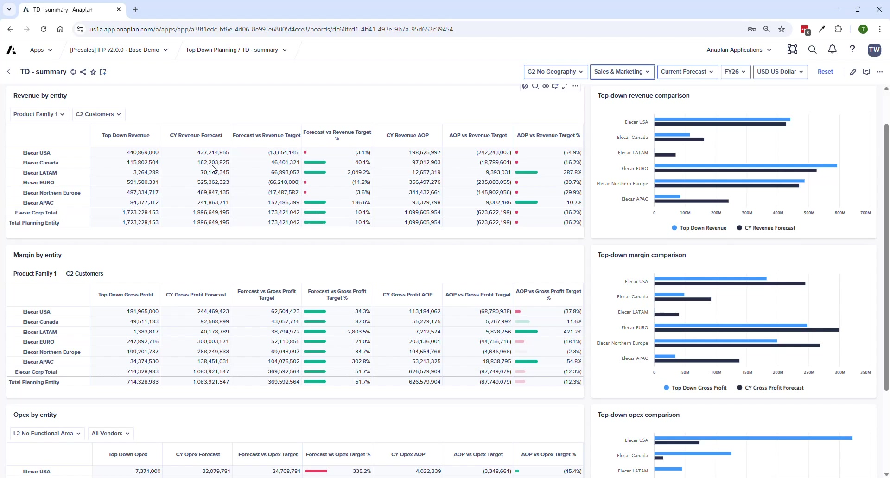

Top-Down Planning
Setting executive targets and reconciling against bottom-up plans
Module 3Module Walkthrough15 min
🚨 ⚠ V2.0 Limitation: No Dynamic Disaggregation
Dynamic top-down disaggregation (automatic cascade of high-level targets to lower levels) is NOT available in IFP v2.0. All targets must be entered manually at each level of detail. Anaplan plans to reintroduce this in a future release.
What You Can Set Targets For
| Category | Target Types |
|---|---|
| Revenue | Revenue Target + Gross Profit Target by product family and customer |
| Margin | Gross Profit % target for COGS accounts |
| Operating Expenses | General OpEx (excl. labor), Labor Cost, Total OpEx |
| Headcount | FTE and Headcount targets (new in v2.0) |
Planning Level
All targets are entered at Level 2 of each dimension hierarchy. In USD — can be reported in local currency.
Process Pages
| Page | Purpose |
|---|---|
| TD – Planning | Manual input of all targets by dimension at L2 |
| TD – Summary | Targets vs. bottom-up plans side-by-side; variance calculations at L2 |

Why Targets Don't Show on Module Summary Pages
By design — the OpEx Summary, Revenue Summary, etc. don't show TD targets. Reason: users viewing those pages may be at a more granular level (L3 entity, cost center) than the L2 targets, creating confusion. All target vs. actual comparison is consolidated on the TD pages at consistent L2.
Talk Track
- "This gives your CFO a single screen to see whether the teams' bottom-up plans are aligned to executive targets."
- "In v2.0 targets are entered manually at L2 — dynamic disaggregation is on the roadmap for a future release."
- "We now support headcount and labor cost targets in addition to revenue, margin, and OpEx — that's new in v2.0."